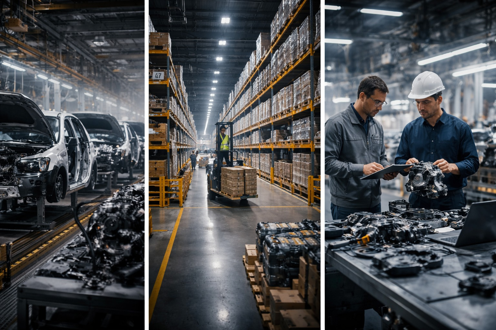

Third Party Logistics That Protects Production
When time-critical parts need to move — across borders, through customs, or into a plant within hours — AAIG provides the expedited logistics backbone that keeps Tier-1 suppliers and OEM production lines running. We don't just move freight. We protect programs.
Built for Time-Critical Automotive Supply
Standard freight isn't designed for production emergencies. AAIG's 3PL model is built specifically around Tier-1 program risk — fast, accountable, and OEM-aware.
Rapid Dispatch
Same-day and next-flight-out emergency dispatch capability when line-down situations demand immediate response.
Cross-Border Coordination
India–USA, USA–Mexico, and intra-Europe movements managed with full customs compliance and documentation control.
Integrated Warehousing
Logistics tied directly to AAIG-managed warehouse operations — no handoff gaps, full traceability from receipt to dispatch.
OEM-Aware Execution
Every shipment governed by production program priorities — AAIG understands OEM timelines, not just carrier schedules.

Wixom, Michigan — Built for Program Execution
AAIG's Wixom facility is the operational anchor for all North American 3PL programs. From inbound receipt through EDI-enabled dispatch, every process is structured around OEM program requirements — not generic freight schedules.
2,500+ Pallet Capacity
Structured racking, FIFO control, and lot traceability across all inventory.
Same-Day Emergency Dispatch
Next-flight-out and dedicated truck capability when production is at risk.
AIAG-Label & EDI/ASN Ready
Full EDI integration and AIAG-compliant labeling from day one.
Expedited & Emergency Freight

The Risk
A quality escape, a supplier shortfall, or an unexpected surge in demand can put an OEM production line at risk within hours. Standard freight carriers cannot respond at the speed production requires — and every hour of delay translates directly into line-down costs and customer escalations.
AAIG's Response
- Same-day emergency dispatch from AAIG-managed US warehouse (Wixom, Michigan)
- Next-flight-out (NFO) air freight coordination for time-critical parts
- Dedicated truck and white-glove courier sourcing for high-value shipments
- Direct plant delivery coordination with OEM receiving teams
- 24/7 escalation contact and real-time shipment tracking
The Outcome
Production-threatening shortages are resolved in hours, not days. OEM line continuity is maintained, escalation is avoided, and the supplier relationship is protected.
Cross-Border & International Logistics

The Risk
International shipments — especially India-to-USA or cross-border North American movements — face fragmented coordination, customs delays, documentation errors, and freight handoff failures. Indian Tier-1 suppliers entering North American programs often lack the infrastructure to manage this reliably.
AAIG's Response
- India–USA freight coordination via air and sea, with full customs broker management
- USA–Mexico border crossing expertise for North American production programs
- Export/import documentation, HTS classification, and compliance oversight
- In-country representation at US port of entry and warehouse receipt point
- Consolidated shipment management for multi-component supplier programs
The Outcome
Indian Tier-1 suppliers deliver reliably into North American programs without building independent overseas logistics teams. AAIG provides the infrastructure — they retain strategic focus.
Inbound Supply Chain & Inventory Management
The Risk
Without disciplined inbound management, Tier-1 suppliers face inventory inaccuracies, receiving delays, non-conforming part escapes, and ASN/EDI failures that trigger OEM chargebacks and delivery performance penalties.
AAIG's Response
- Structured receiving, labeling, and put-away processes aligned to OEM requirements
- 100% EDI/ASN processing with AIAG-compliant label generation
- Barcode scanning and WMS-integrated inventory tracking
- First-in/first-out (FIFO) management and lot traceability
- Incoming quality inspection and segregation prior to program deployment
The Outcome
Every part that enters the AAIG warehouse is received, verified, and traceable before it moves — eliminating inventory surprises, OEM labeling deviations, and supply inaccuracies.
Outbound Fulfillment, JIT & Sequencing
The Risk
JIT and sequenced delivery programs leave zero margin for fulfillment errors. Mis-sequenced shipments, incorrect quantities, or late departures from the warehouse cause line interruptions and contractual penalties with zero tolerance from OEM customers.
AAIG's Response
- Sequence management for JIT and JIS programs aligned to plant call-off schedules
- Custom kitting and repack prior to outbound dispatch
- Carrier coordination and dock scheduling with OEM plant receiving teams
- Pick-and-pack accuracy verification and pre-shipment quality checks
- Outbound ASN generation and shipment notification to OEM systems
The Outcome
OEM plants receive the right parts, in the right sequence, at the right time — protected by a disciplined fulfillment process that treats delivery performance as a non-negotiable output.
Return & Reverse Logistics
The Risk
Non-conforming returns, warranty returns, and field escapes require structured reverse logistics processes. Without them, suspect parts enter uncontrolled flows, rework-to-stock decisions lack traceability, and financial recovery from suppliers is delayed or lost.
AAIG's Response
- Structured return authorization and receiving workflows
- Non-conforming part segregation, tagging, and disposition management
- Rework-to-stock assessment and coordinated recovery operations
- Cross-border return processing with export documentation
- Supplier return coordination and disposition reporting
The Outcome
Non-conforming product is controlled, traced, and recovered — preventing suspect parts from re-entering the supply chain and enabling structured financial disposition with supplier accountability.
Why Our Logistics Model Works
Standard 3PL providers move freight. AAIG protects programs.
Production-First Prioritization
Every logistics decision is made against the backdrop of OEM production timelines — not carrier calendars or standard SLA windows.
Integrated with Quality Operations
AAIG's 3PL is embedded within warehouse and quality operations — parts are inspected, corrected, and dispatched within a single controlled environment.
Cross-Border Expertise
With operations spanning India, USA, and Europe, AAIG manages international freight complexity that specialist logistics providers often cannot coordinate end-to-end.
Single Point of Accountability
One partner covers warehousing, quality, rework, and logistics — eliminating handoff failures between disconnected service providers during a crisis.
The AAIG 5-Step Overseas Launch Framework
Structured global expansion without operational disruption — from strategic assessment through scalable governance.

Facing a Time-Critical Logistics Challenge?
Whether you need emergency dispatch today or a structured 3PL framework for an ongoing program — AAIG responds with speed and accountability.